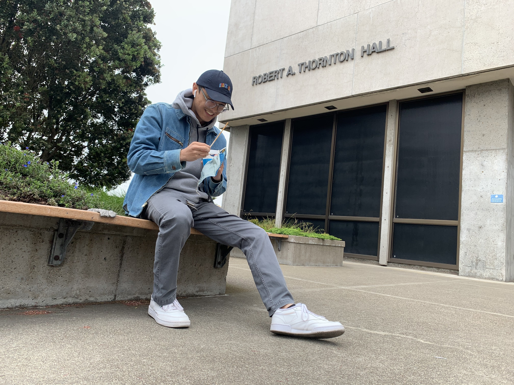

Name: Marc Castro
SFSU ID: 92720147
Github Name: mcastro16
Description: My name is Marc Joseph Guerrero Castro, I am a 20-year-old Filipino-American originally from Los Angeles, CA, my hometown being Eagle Rock. I am a 3rd year Computer Science major with a minor in Critical Mixed Race Studies. I went to St. Francis High School in La Canada, California and am interested in exploring different parts of California as a whole. For the first two years of college, I attended California State University San Marcos and got heavily associated with the area of San Diego and San Marcos. Since my transfer to San Francisco State University, I had recently done a lot of exploring of San Francisco with some of my new friends and friends that already go to school up here in Northern California. This page was made to showcase some of the my favorite eateries and places that I have been to since I have arrived.